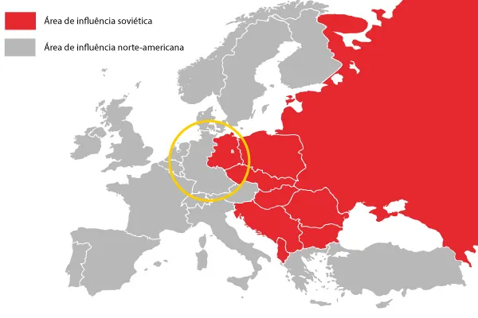
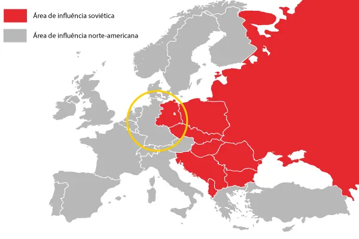

Blocos, Modelos econômicos e sociais
Durante a Guerra Fria, o mundo se dividiu em dois grandes blocos econômicos e ideológicos, liderados pelos Estados Unidos (EUA) e pela União Soviética (URSS). Cada bloco representava visões opostas sobre como organizar a sociedade, a economia e a política. O bloco liderado pelos Estados Unidos, com países como Alemanha Ocidental, Reino Unido, França, Japão, Canadá, Itália, Austrália, Brasil, Espanha, Portugal, Bélgica, Holanda, Noruega, Dinamarca, Grécia, Turquia, Coreia do Sul, Taiwan, Filipinas, Israel e Nova Zelândia, adotava um modelo econômico e social capitalista, baseado na liberdade econômica, na iniciativa individual e na propriedade privada. Já o bloco liderado pela URSS, com países como Alemanha Oriental, Polônia, Tchecoslováquia, Hungria, Bulgária, Romênia, Cuba, China, Coreia do Norte, Vietnã do Norte, Albânia, Mongólia, Laos e Camboja, seguia o modelo socialista, com forte intervenção do Estado na economia e na sociedade.
Capitalista
- Apoia a propriedade privada dos meios de produção
- Livre mercado (oferta e procura definem os preços)
- Iniciativa individual valorizada
- Concorrência entre empresas
- Estado com papel mínimo na economia
- Liberdade de expressão e política multipartidária
- Desigualdade social considerada natural no sistema
Socialista
- Apoiava a propriedade estatal dos meios de produção
- Economia planificada (tudo é controlado pelo Estado)
- Igualdade social como objetivo central
- Ausência de livre concorrência
- Estado com papel central e controlador
- Partido único, censura e repressão política
- Distribuição de renda controlada pelo governo
A divisão da Alemanha em duas partes é um dos exemplos mais emblemáticos da separação ideológica e política entre capitalismo e socialismo durante a Guerra Fria. A Alemanha Ocidental, alinhada aos países capitalistas, seguia o modelo capitalista, enquanto a Alemanha Oriental estava sob forte influência soviética e adotava o modelo socialista. Embora não tenha havido conflito militar direto entre os dois lados, a tensão política era constante. O Muro de Berlim, que separava fisicamente as duas Alemanha, tornou-se um símbolo emblemático dessa divisão e das diferenças entre os bloco
 

Características da Guerra Fria
Uma de suas principais características, é o combate em si, ser menos direto, já que não houve derramamento de sangue (ao menos, por parte direta das superpotências) pelo contrário, houve mais conflitos indiretos, como a Corrida Espacial, que foi uma disputa entre ambos países, para fazer expedições espaciais, e chegarem até a lua. A Corrida Armamentista, onde ambos países, investiram em tecnologias bélicas, assim, crescendo o número de armas nucleares e termonucleares. A polarização do mundo, com uma parte alinhada com o Comunismo, e a outro com o Capitalismo. Houve também ditaduras militares, já que ambos países, financiavam países que estavam alinhados a seus propósitos, com o propósito de conter uma possível "ameaça comunista" e vice e versa. Na América do Sul, praticamente todos os países passaram por golpes de estado e ditaduras de extrema direita, e todos, com o apoio e financiamento do Estados Unidos.